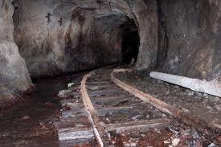
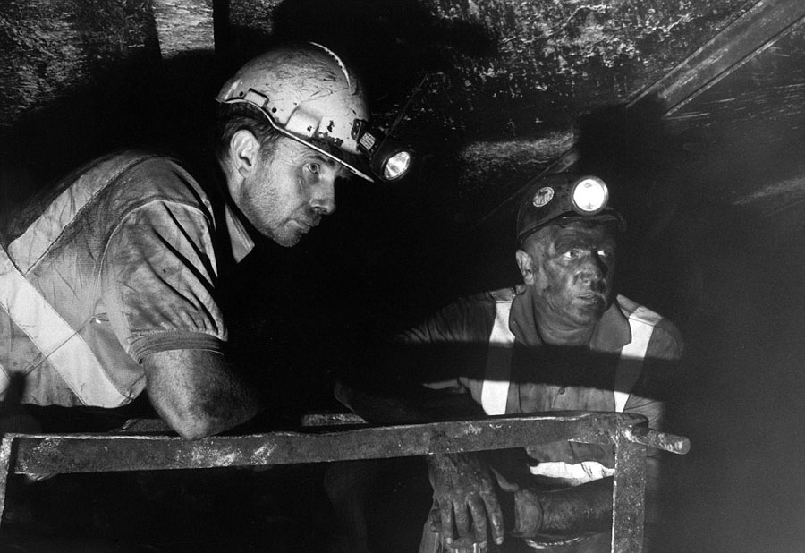

簡介
|  |
| 礦坑 |
過去有礦場的地方，必定是繁榮的。
以菁桐的石底大斜坑為例，石底大斜坑的成功讓當時的平溪煤產達到最巔峰時期，礦工人數達到5000人以上，因當時的煤產是輝煌時期，而在當地興建福利社、員工宿舍、礦工醫院及礦工俱樂部等，礦產程度極為重要。
而現在九份、平溪、菁桐等礦區已經轉成觀光景點，多數來到這裡的民眾幾乎是逛老街、買紀念品、放天燈活動…等。原本十分重視保留的坑口，如今已荒廢到雜草叢生，極少人流的博物館和紀念公園。
隨著時間流逝，人們早已遺忘曾經屬於煤礦的輝煌時期，長久時間的轉變如此巨大，令人十分感慨。
緣由
|  |
| 我是圖片敘述我是圖片敘述我是圖片敘述我是圖片敘述我是圖片敘述我是圖片敘述 |
我們希望，能讓來到這些地方觀光的民眾，簡單瞭解昔日的煤礦風情，於是決定選擇做煤礦的礦工為我們的主題。
「礦工」這職業對於現代人來說已經是個陌生職業，頂多從紀錄片或是一些電影情節裡知道礦工就是坑道裡工作，其實礦工是很艱辛的職業，是用體力用生命去換得養家餬口，也是當時職災風險高，職業病多的工作。